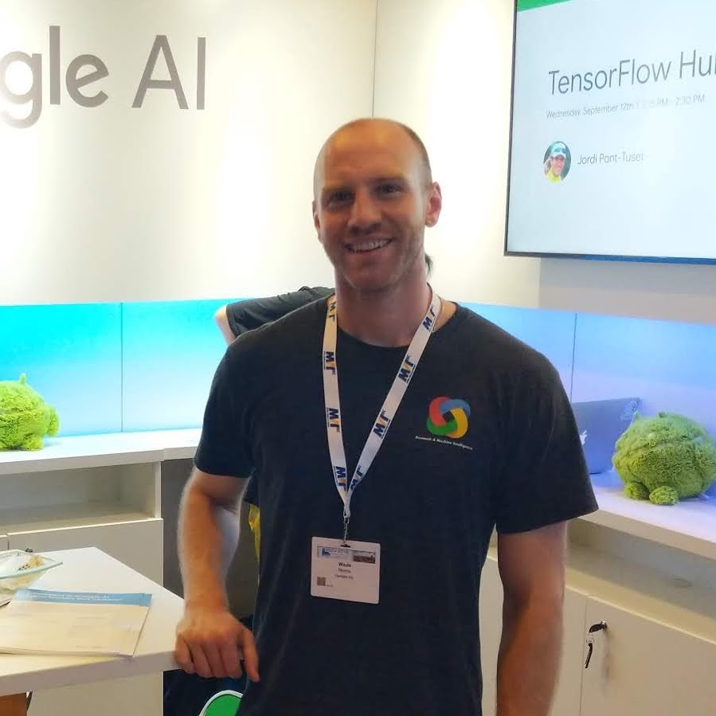

Wade Norris
explore Washington, D.C. | Santa Monica
email wade.norris@ucla.edu
code github.com/wnorris
work linkedin.com/in/wadenorris
Hi, I'm Wade!
I'm a software engineer, computer vision researcher, and roboticist.
I studied Computer Science and Philosophy at UCLA. While at UCLA, I did two years of research with the Center for Domain Specific Computing supervised by Professor Glenn Reinman and Professor Luminita Vesei. My reseach focused on accelerating algorithms by porting execution to the GPU using CUDA, with a particular emphasis on three dimensional MRI image processing. I spent one summer working at George Washington University supervised by Professor Rahul Simha. This work was sponsored by a National Science Foundation Grant and was focused on creating educational robotics kits to teach students coding and computer vision. I additionally did an internship at Zynx Health, Blackbird Technologies, and served as the President of the California Beta chapter of the computer science honor society, Upsilon Pi Epsilon.
I spent 7 years working for Google. At the end of my tenure at Google I was a technical lead for the Mobile Vision Team, a part of Google AI formerly Research and Machine Intelligence. Within this group I did computer vision research and worked on applying state of the art deep neural networks to various challenges. I helped launch the Cloud Vision API and Google Lens. I was in charge of Vision Mining Toolkit [Internal Googler Link], Logo Recognition, Artwork Recognition, and one other confidential non-public project.
I now work at PerceptionLabs.ai.
I am an alumni of FIRST Robotics Team 611, Langley High School, and am now a mentor of Team 702, Culver City High School. I'm passionate about learning, building, tinkering, experimenting, and teaching.
I love meeting new people who are passionate about science and technology. Please feel free to reach out if you'd like to chat!
I'm a software engineer, computer vision researcher, and roboticist.
I studied Computer Science and Philosophy at UCLA. While at UCLA, I did two years of research with the Center for Domain Specific Computing supervised by Professor Glenn Reinman and Professor Luminita Vesei. My reseach focused on accelerating algorithms by porting execution to the GPU using CUDA, with a particular emphasis on three dimensional MRI image processing. I spent one summer working at George Washington University supervised by Professor Rahul Simha. This work was sponsored by a National Science Foundation Grant and was focused on creating educational robotics kits to teach students coding and computer vision. I additionally did an internship at Zynx Health, Blackbird Technologies, and served as the President of the California Beta chapter of the computer science honor society, Upsilon Pi Epsilon.
I spent 7 years working for Google. At the end of my tenure at Google I was a technical lead for the Mobile Vision Team, a part of Google AI formerly Research and Machine Intelligence. Within this group I did computer vision research and worked on applying state of the art deep neural networks to various challenges. I helped launch the Cloud Vision API and Google Lens. I was in charge of Vision Mining Toolkit [Internal Googler Link], Logo Recognition, Artwork Recognition, and one other confidential non-public project.
I now work at PerceptionLabs.ai.
I am an alumni of FIRST Robotics Team 611, Langley High School, and am now a mentor of Team 702, Culver City High School. I'm passionate about learning, building, tinkering, experimenting, and teaching.
I love meeting new people who are passionate about science and technology. Please feel free to reach out if you'd like to chat!